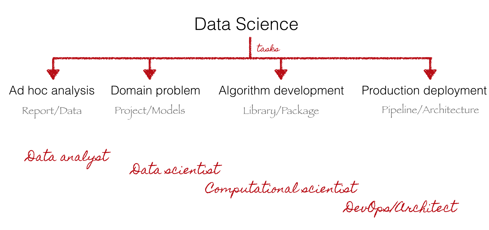
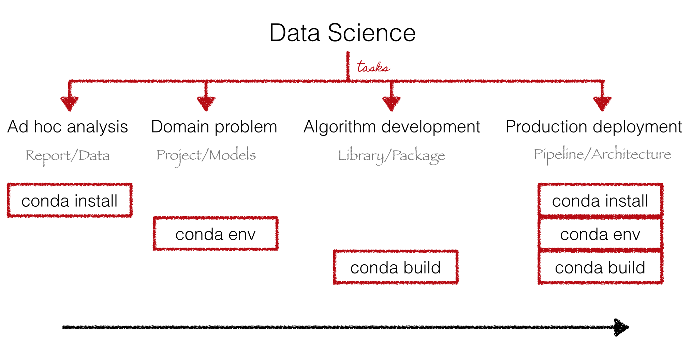

Reproducible Multi-language
Data Science with Conda
PyData Dallas 2015
by Christine Doig
This talk
http://chdoig.github.com/pydata-dallas-conda
Reproducible Multi-language Data Science Conda
Reproducible Multi-language Data Science with Conda
Data Science
Tasks
Players

Data Science
...involves different types of tasks, sometimes with different players...
Multi-language
Most commonly used tools

Data Science languages

Language agnostic applications and multi-language interfaces
Multi-language
Data Science is multi-language. Let's find symbiosis among languages, embrace language agnostic applications and expose language bindings
Reproducible
Requirements
Methods

Isolation vs Overhead

Reproducible
Reproducibiliy requires sharing code, dependencies versions, data and platform requirements. For usability and performance, ideally, at the lowest cost possible (space, network bandwith)
Conda
Conda
Language-agnostic cross-platform package and environment manager written in Python
Conda - Data Science
Conda - Multi-language
Conda is language-agnostic

Conda - Reproducibility

Reproducible Multi-language Data Science with Conda
Get it
Useful tip
$ wget http://bit.ly/minicondaInstall packages
$ conda install python=2.7 mongodb pandas bokeh=0.8Manage environments
Build packages
Share your packages
Create production and dev channels
A reproducible multi-language data science project example